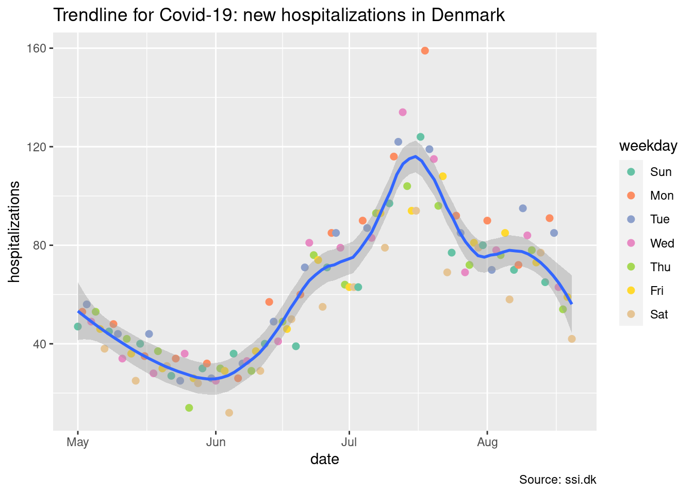
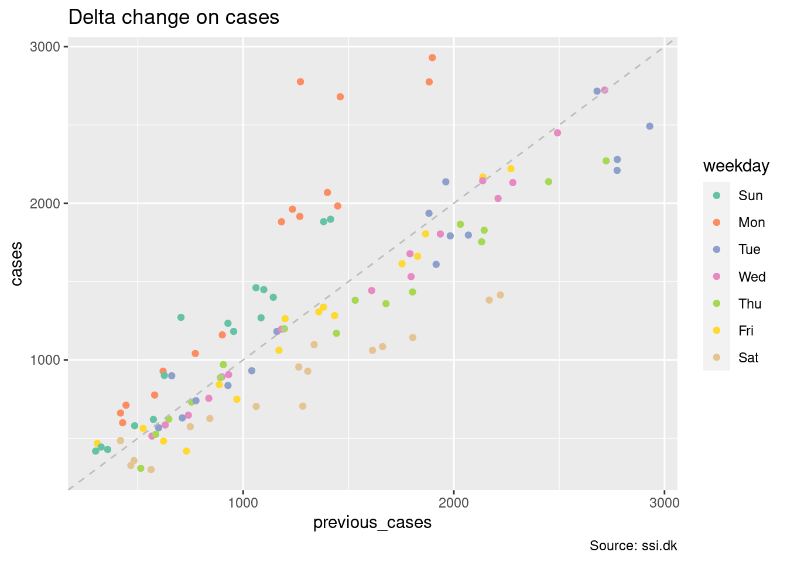

Covid-19 Stats for Denmark
2022-01-17
Strategy
Data processing is best handled by writing a program which processes the data, rather than using interactive methods by hand. The reason is underlying data changes dynamically over time, but the program stays the same. This means we can simply re-run the program whenever data changes and get new visualizations.
This visualization uses R which is a language mostly for statistical processing. It also has a very strong visualization side, and this is used by SSI in Denmark for their reporting. The original compartmental models by SSI for Covid-19, used for predictions, also used R.
For our work here, R is a good choice because it has lots of tooling for working with tables of data. And SSI provide their data in tabular format.
Initial setup
To process data sets from SSI, we’ll need some packages for doing so. We’ll load tidyverse, and lubridate.
The lubridate package empowers our R system with better handling of dates and timestamps. The tidyverse package loads a slew of other packages for R. These empower our system to be more like a functional programming language, which I tend to like working in.
You can grab SSI’s data from their homepage
library(tidyverse)
library(lubridate)SSI’s data is in a zip file. We unpack this zip file into a directory of the general form YYYY-MM-DD. Lets set up a name for the current directory we want to grab data from
date <- "2022-01-17"Ingesting data
The overall strategy follows a 3-step process:
- Parse the incoming data, providing a proper interpretation of what it means.
- Transform the data, making it amenable for data-visualization.
- Visualize the data, aiding the understanding of patterns, evaluations, and structure.
SSIs data are in “CSV” files. The CSV format isn’t generally well specified, and the variant used by SSI is one in which the ; character is used as a separator. This is relatively common in countries using the , as a separator in numbers. R’s readr package, loaded by tidyverse, have a way to handle this particular CSV variant.
Furthermore, the files contain Danish characters. They are encoded in the ISO8859-1(5) format, so we’ll have to do something about this. The obvious way is to turn the encoding into UTF-8, which is the modern encoding of Unicode.
We’ll capture this conversion into a function read_data. It uses iconv to convert between encodings. The function also allows us to designate the types of the columns in the file we are trying to read.
read_data <- function(f, col_types) {
raw <- readBin(f, "raw", n = file.size(f))
x_utf8 <- iconv(list(raw), from = "ISO-8859-1", to = "UTF-8", toRaw = TRUE)[[1]]
# CSV variant 2 uses ; as the separator, among other adaptations
res <- read_csv2(x_utf8, col_types=col_types)
return(res)
}Daily key figures
SSI provides a file with key figures. This file is updated 5 days a week. Since we already have set a target date, we can compute the file with key figures in it by substitution
file <- sprintf("./data/%s/Regionalt_DB/03_bekraeftede_tilfaelde_doede_indlagte_pr_dag_pr_koen.csv", date)We can read this file via our function. It will return a so-called tibble which is a table, or data frame, of the data in the file. We also provide initial types for each of the columns, because CSV data is untyped.
We would like to add type information to columns because it simplifies our later plotting. Many tools in R know how to vary it’s handling, based on the type.
In the following we use the following types:
col_date()is a date, with no particular timestamp.col_double()is a floating point number. This allows parses of numbers in general, while still handling integers adequately.col_factor()is used the define factor values. These are small (discrete) sets of values, in this case the different Regions of Denmark.
data <- read_data(file, col_types=cols('Region' = col_factor(),
'Prøvetagningsdato' = col_date(),
'Køn' = col_factor(),
'Bekræftede tilfælde' = col_double(),
'Døde' = col_double(),
'Indlæggelser' = col_double()
))## ℹ Using "','" as decimal and "'.'" as grouping mark. Use `read_delim()` for more control.data## # A tibble: 6,558 × 9
## Region Prøvetagningsdato Køn `Bekræftede tilfælde` Døde Indlæggelser
## <fct> <date> <fct> <dbl> <dbl> <dbl>
## 1 Sjælland 2020-02-26 M 1 0 0
## 2 Hovedstaden 2020-02-27 M 1 0 0
## 3 Midtjylland 2020-02-28 M 1 0 0
## 4 Hovedstaden 2020-03-01 M 1 0 1
## 5 Hovedstaden 2020-03-02 M 2 0 1
## 6 Sjælland 2020-03-02 M 1 0 0
## 7 Syddanmark 2020-03-02 M 1 0 0
## 8 Hovedstaden 2020-03-03 F 1 0 0
## 9 Hovedstaden 2020-03-03 M 3 0 1
## 10 Hovedstaden 2020-03-04 M 2 0 0
## # … with 6,548 more rows, and 3 more variables: Kummuleret antal døde <dbl>,
## # Kummuleret antal bekræftede tilfælde <dbl>,
## # Kummuleret antal indlæggelser <dbl>We certainly don’t want to work with danish-named columns. Rather, we want small descriptive names which are easy to type. We send our dataset through a rename pass for this.
And while we are here, lets also limit ourselves to the columns we are interested in. There are some cumulative columns in the dataset, but we are not going to be interested in those. So we select the columns we care about.
data <- data %>% rename(region = 'Region',
date = 'Prøvetagningsdato',
gender = 'Køn', # This might be wrong, because it could also be 'sex'. However, we are going to aggregate it
cases = 'Bekræftede tilfælde',
deaths = 'Døde',
hospitalizations = 'Indlæggelser')
# Cut the cumulative columns away
data <- data %>% select(region, date, gender, cases, deaths, hospitalizations)
data## # A tibble: 6,558 × 6
## region date gender cases deaths hospitalizations
## <fct> <date> <fct> <dbl> <dbl> <dbl>
## 1 Sjælland 2020-02-26 M 1 0 0
## 2 Hovedstaden 2020-02-27 M 1 0 0
## 3 Midtjylland 2020-02-28 M 1 0 0
## 4 Hovedstaden 2020-03-01 M 1 0 1
## 5 Hovedstaden 2020-03-02 M 2 0 1
## 6 Sjælland 2020-03-02 M 1 0 0
## 7 Syddanmark 2020-03-02 M 1 0 0
## 8 Hovedstaden 2020-03-03 F 1 0 0
## 9 Hovedstaden 2020-03-03 M 3 0 1
## 10 Hovedstaden 2020-03-04 M 2 0 0
## # … with 6,548 more rowsProvide a low cut-off. We are interested in the recent period with Omicron, rather than the full duration of Covid-19.
lo_cutoff <- '2021-09-01'The high end of that cutoff, we set to two days before the maximal date in our data set
hi_cutoff <- max(data$date) - days(2)Rationale: News outlets generally report a cumulative count increase . The actual date of testing is often lagging by 24h to 48h. We are interested in getting the right test-date, even if it means we have a 2 days lag. Hence, we assume that recent data are still “forming”.
A typical example is that the count for the current date is very close to 0, as no tests have come in yet. In 2-3 days time, this number rises to the right value, as data is retroactively updated.
Using the cumulative count means that the test date is being moved to some other date, and this will skew any kind of trend-line attempt.
Filtering the data set is easy:
data <- data %>% filter(date >= lo_cutoff, date < hi_cutoff)
# Put this into the summary
summary <- data
summary## # A tibble: 1,360 × 6
## region date gender cases deaths hospitalizations
## <fct> <date> <fct> <dbl> <dbl> <dbl>
## 1 Hovedstaden 2021-09-01 F 210 0 7
## 2 Midtjylland 2021-09-01 F 65 0 0
## 3 Nordjylland 2021-09-01 F 22 0 4
## 4 Sjælland 2021-09-01 F 41 0 0
## 5 Syddanmark 2021-09-01 F 46 0 1
## 6 Hovedstaden 2021-09-01 M 184 2 8
## 7 Midtjylland 2021-09-01 M 49 0 1
## 8 Nordjylland 2021-09-01 M 16 1 2
## 9 Sjælland 2021-09-01 M 37 0 3
## 10 Syddanmark 2021-09-01 M 41 0 1
## # … with 1,350 more rowsWeekly key figures split by age
As in the case with the general data, we can define the file of interest
file <- sprintf("./data/%s/Regionalt_DB/18_fnkt_alder_uge_testede_positive_nyindlagte.csv", date)We can reuse our data reader from before.
data <- read_data(file, col_types=cols('Uge' = col_character(), # This will need fixing later
'Aldersgruppe' = col_factor(),
'Testede pr. 100.000 borgere' = col_double(),
'Positive pr. 100.000 borgere' = col_double(),
'Nyindlagte pr. 100.000 borgere' = col_double(),
'Antal testede' = col_double(),
'Antal positive' = col_double()
))## ℹ Using "','" as decimal and "'.'" as grouping mark. Use `read_delim()` for more control.Rename the columns to something more amenable to further handling
data <- data %>% rename(week = 'Uge',
ageGroup = 'Aldersgruppe',
tested_100k = 'Testede pr. 100.000 borgere',
cases_100k = 'Positive pr. 100.000 borgere',
hospitalized_100k = 'Nyindlagte pr. 100.000 borgere',
tested = 'Antal testede',
cases = 'Antal positive')
data## # A tibble: 904 × 7
## week ageGroup tested_100k cases_100k hospitalized_100k tested cases
## <chr> <fct> <dbl> <dbl> <dbl> <dbl> <dbl>
## 1 2020-W04 0-2 0 0 0 0 0
## 2 2020-W04 3-5 0 0 0 0 0
## 3 2020-W04 6-11 0 0 0 0 0
## 4 2020-W04 12-15 0 0 0 0 0
## 5 2020-W04 16-19 0 0 0 0 0
## 6 2020-W04 20-39 0 0 0 0 0
## 7 2020-W04 40-64 0 0 0 0 0
## 8 2020-W04 65-79 0 0 0 0 0
## 9 2020-W04 80+ 0 0 0 0 0
## 10 2020-W05 65-79 0 0 0 1 0
## # … with 894 more rowsTake a look at the week column. It reports a year, and a week number. We’ll need to handle this, by converting this into a date. We’ll do that by defining a fixup function. If we have a string such as 2020-W04, it means the 4th week of 2020. To get a date, we need a day inside the week to use as the day-of-week. So we turn the string into 2020-W04-1, then send it through strptime(), a general time-parsing function.
fixup_week <- function(s) {
# For strptime to do its work correctly, it must know a day of the week. Here, we
# use the 1st day of the week as a anchoring point, but in principle any day could
# have been used.
x <- sprintf("%s-1", s)
res <- strptime(x, format="%Y-W%W-%u")
return(as.POSIXct(res))
}With the function defined, we can mutate our data set by the fixup, setting each value in the table to be the fixup’ed value. While here, also cut off the older values since we are mostly interested in the recent data.
lo_cutoff <- "2021-11-01"
# Apply this to the data set
data <- data %>% mutate(week = fixup_week(week))
data <- data %>% filter(week >= lo_cutoff)Finally, lets use a good name for this dataset (tibble):
weekly <- dataCountry-wide data
Let’s analyze the country-wide data set. Because data is given by each region, we must first summarize the data by summing the data from each region per day. This means we group by the date and then sum
# Group by date, so we can get rid of region/gender
country <- summary %>%
group_by(date) %>%
summarize(cases = sum(cases),
deaths = sum(deaths),
hospitalizations = sum(hospitalizations))We also want a lag-column. That is, for each date, we want the count from the day preceding it. This allows us to compute the change for each day.
We also add a new column weekday, which computes the day of the week. This allows us to visualize weekly periodic fluctuations in reporting. We might not know the cause of such noise in the data set, but it is still important to show patterns when they occur.
# Create a lag column for cases
country <- country %>% mutate(previous_cases = lag(cases, order_by=date),
weekday = lubridate::wday(date, label=TRUE))Country-wide visualizations
At this point, we have readied our data, and can start plotting. First, lets plot the number of cases we have in Denmark, and supply a trend-line for the cases
(Aside: We use ggplot2 to visualize. ggplot uses a grammar of graphical layers as its plotting strategy. For instance p + geom_point() is a form of “addition” where p is a plot and geom_point() is an x-y scatterplot of points. So the + means “add another layer on top of our plot.”
The other key idea is that of the aes(..) function. This is an aesthetic-mapping. For example, the expression aes(x=date, y=cases) maps the date column to the x-axis, and the cases column to the y-axis. Likewise, aes(color = weekday) maps a tables weekday column into a “color dimension.”)
The trend-line is computed by Local Regression, or LOESS (LOcally Estimated Scatterplot Smoothing). This is a generalization of a moving average over the data. The span = .3 parameter sets the bandwidth to 30% of the data.
LOESS is a trade-off where we throw computational power at the problem to obtain good smoothed trend lines. It would be impossible to do by hand, but we have access to modern computers with ample computational power.
plot_country <- function(p, title, caption) {
p + geom_point(aes(color = weekday), size=2) +
geom_smooth(method = 'loess', span = .3) +
scale_colour_brewer(palette="Set2") +
labs(title = title, caption = caption)
}
p <- ggplot(country, aes(x=date, y=cases))
plot_country(p, "Trendline for Covid-19 cases in Denmark", "Source: ssi.dk")## `geom_smooth()` using formula 'y ~ x'
We can use the same plot function to handle hospitalizations in Denmark
p <- ggplot(country, aes(x=date, y=hospitalizations))
plot_country(p, "Trendline for Covid-19: new hospitalizations in Denmark", "Source: ssi.dk")## `geom_smooth()` using formula 'y ~ x'
And likewise for deaths. Since deaths tend to have a larger lag before reporting, we don’t report the last 5 days
hi_cutoff_deaths <- max(country$date) - days(4)
p <- ggplot(country %>% filter(date < hi_cutoff_deaths), aes(x=date, y=deaths))
plot_country(p, "Trendline for Covid-19: new deaths in Denmark", "Source: ssi.dk")## `geom_smooth()` using formula 'y ~ x'
The next plot computes the change from the day before to the next day. A positive number means “There were this many more cases today.” A negative number means “There were this fewer cases today.” This shows how data is getting more noisy once Omicron takes over and more tests are being made.
As we shall see, this noise mostly comes from a single region in Denmark.
# Lagged data computes the difference to the day before.
plot_country_lag <- function(p, title, caption) {
p + geom_point(size=1.5) +
scale_colour_brewer(palette="Set2") +
labs(title = title, caption = caption)
}
p <- ggplot(country, aes(x=date, y=(cases - previous_cases), color=weekday))
plot_country_lag(p, "As Omicron took over, noise entered data in Denmark", "Source: ssi.dk")## Warning: Removed 1 rows containing missing values (geom_point).
Another way of plotting this is to plot the number of cases today on one axis, and the previous cases from the day before on another axis.
p <- ggplot(country, aes(x=previous_cases, y=cases, color=weekday))
plot_country_lag(p, "Delta change on cases", "Source: ssi.dk") +
geom_abline(slope=1, color='gray', linetype=2)## Warning: Removed 1 rows containing missing values (geom_point).
The fact Monday and Sunday are always above the dashed line means they always provide an increase in case count compared to other days. The days where these numbers tend to be entered into the database are Monday and Tuesday.
Because there are some clear day-of-week structure in the data set, it’s worth looking a bit into this. In particular:
Mondaytends to have large positive change.Wednesdaytend to have a smaller decrease.
plot_day_of_week <- function(p, title, caption) {
p + scale_colour_brewer(palette="Set1") +
stat_boxplot(aes(fill=weekday, color=weekday), alpha=0.3) +
labs(title = title, caption = caption)
}
p <- ggplot(country, aes(x=weekday, y=(cases - previous_cases)))
plot_day_of_week(p, "Some days of the week has clear over/under-representation", "Source: ssi.dk")## Warning: Removed 1 rows containing non-finite values (stat_boxplot).
Regional data
Compute the aggregate over regions, rather than for the whole country
regions <- summary %>%
group_by(date, region) %>%
summarize(cases = sum(cases), deaths = sum(deaths), hospitalizations = sum(hospitalizations))## `summarise()` has grouped output by 'date'. You can override using the `.groups` argument.regions <- regions %>% mutate(weekday = lubridate::wday(date, label=TRUE), order_by=date)Regional visualizations
To visualize the regional data, we use a facet grid, splitting on region. As we see, there are a lot of noise data generated by “Hovedstaden” (corresponding to the general area around Copenhagen). This region is generating most cases, by far.
plot_regions <- function(p, title, caption) {
p + geom_point(aes(color=region)) +
facet_grid(rows=vars(region)) +
scale_colour_brewer(palette="Set2") +
scale_y_continuous(breaks = c(0, 10000)) +
labs(title = title,
caption = caption,
x = "Date",
y = "Detected Cases")
}
p <- ggplot(regions, aes(x=date, y=cases))
plot_regions(p, "Copenhagen-general area (Hovedstaden) contributes most of the noise", "Source: ssi.dk")
Weekly data
As with the case for daily key figures, we can also use the weekly key figures. An important point of this data set is that the ageGroup are not a continous variable, but a discrete set of groups, non-uniformly spaced in between:
levels(factor(weekly$ageGroup))## [1] "0-2" "3-5" "6-11" "12-15" "16-19" "20-39" "40-64" "65-79" "80+"Why this is so is a good question. My bet is that it captures schooling groups among the youngest, splits adults into younger and older adults pivoting on 40, and handles the elderly in two large groups as well. However, it also means direct comparison between groups is somewhat dangerous.
Visualizations
We can provide a simple raster plot, where x represents the week, y represents the (discrete) age group and the fill represents the count we are interested in. In principle, the age groups have different sizes, but we can adjust for the size difference in groups by looking at “x per 100.000”.
plot_age_cases <- function(p, title, caption) {
p + geom_tile() +
scale_fill_continuous(type = "viridis") +
labs(title = title, caption = caption, x="Week", y = "Age Group")
}p <- ggplot(weekly, aes(x=week, y=ageGroup, fill=cases_100k, height=0.8))
plot_age_cases(p, "Schools were closed on 15th Dec 2021, cases dropped", "Source: ssi.dk")
p <- ggplot(weekly, aes(x=week, y=ageGroup, fill=tested_100k, height=0.8))
plot_age_cases(p, "Schools were closed on 15th Dec 2021, tests dropped", "Source: ssi.dk")